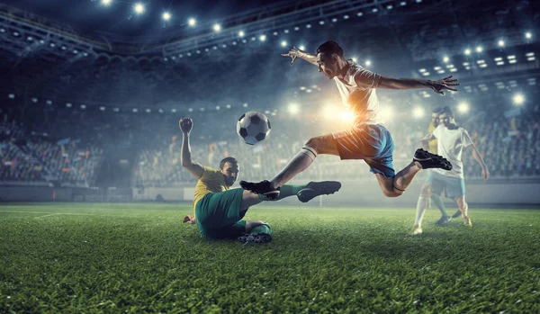

Bem-vindo ao site sobre futebol! Aqui você encontrará informações interessantes sobre o esporte mais popular do mundo.
História do Futebol
O futebol é um esporte com uma longa história, tendo suas origens em jogos antigos praticados em diferentes culturas. A versão moderna do futebol foi desenvolvida na Inglaterra no século XIX.
Durante a Idade Média e o Renascimento na Europa, o futebol era praticado de forma desorganizada, com regras variáveis e muitas vezes violentas. As partidas eram realizadas entre aldeias ou entre diferentes grupos de jogadores, e o objetivo era geralmente fazer a bola ultrapassar um determinado ponto ou marcar gols em traves improvisadasMelhores jogadores
- Lionel Messi
- Cristiano Ronaldo
- Neymar Jr.
- Diego Maradona
- Pelé
Principais Competições
- Copa do Mundo FIFA
- UEFA Champions League
- Campeonato Inglês (Premier League)
- Campeonato Espanhol (La Liga)
- Campeonato Brasileiro (Série A)
Jogadores com mais gols
- Pelé-1.283
- Cristiano Ronaldo-836
- Lionel Messi-806
- Romário-748
- Levandowski-700
Jogadores com mais assitências
- Púscas-390
- Pelé-368
- Cruyff-358
- Lionel Messi-332
- Giggs-277
Times com mais titulos na história
- Real Madrid-119
- Barcelona-95
- Al Ahlly-93
- Juventus-68
- Bayern-64